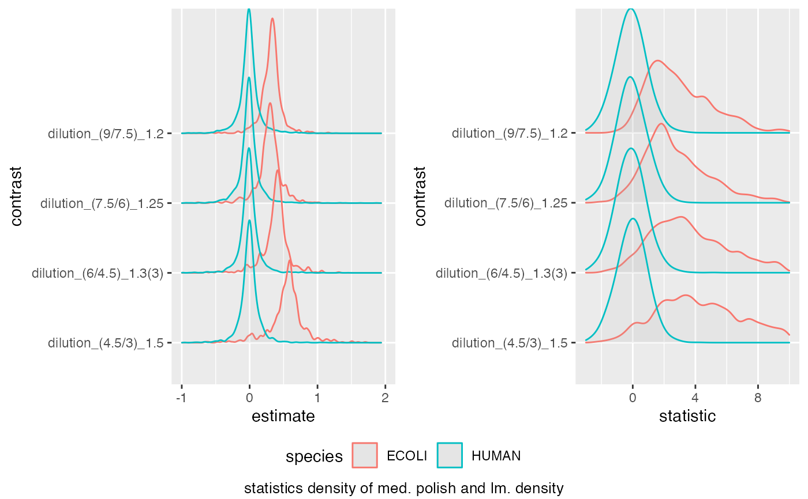
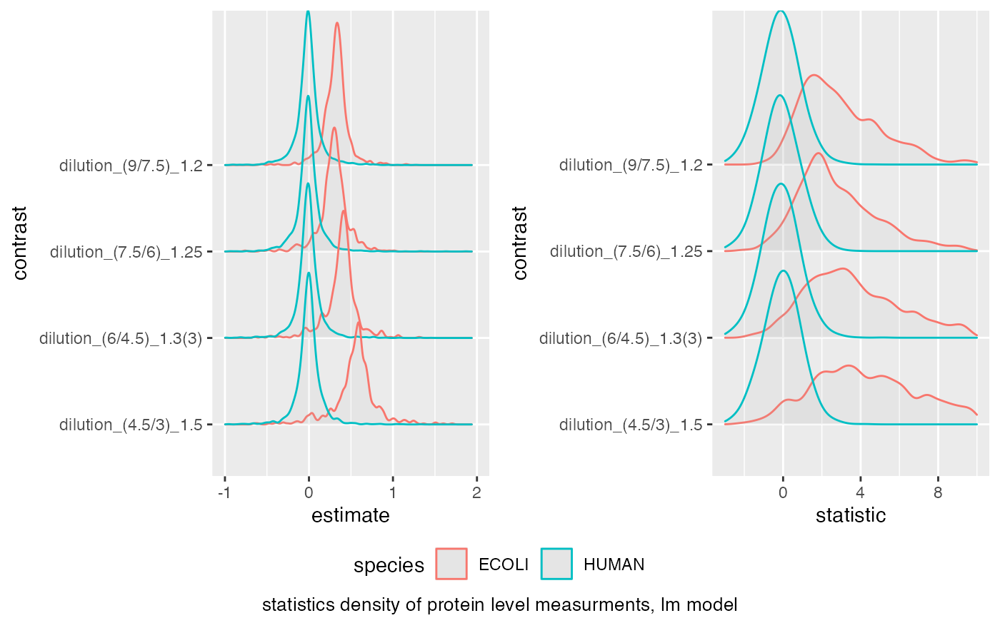
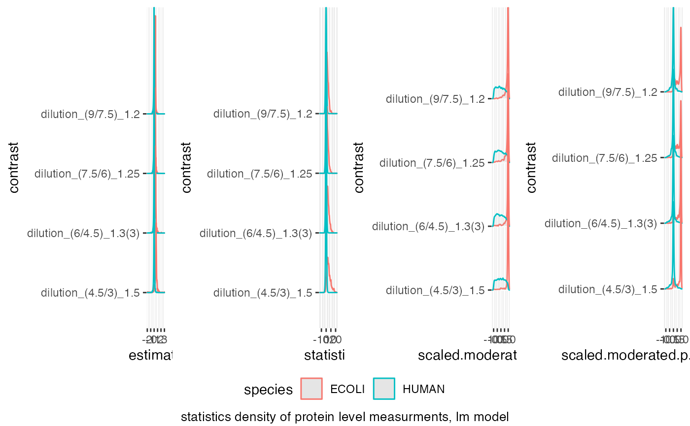
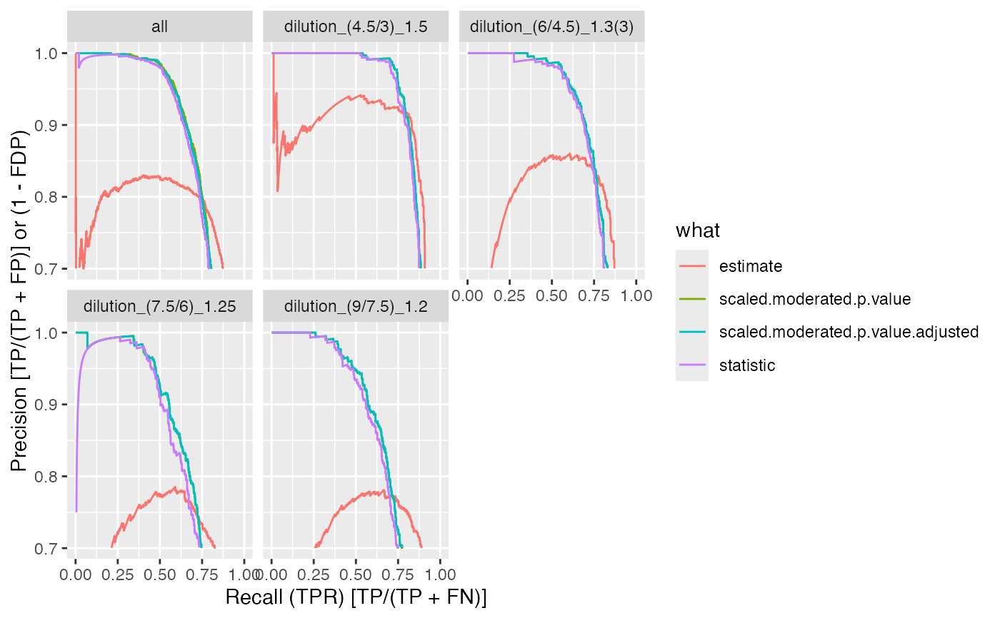
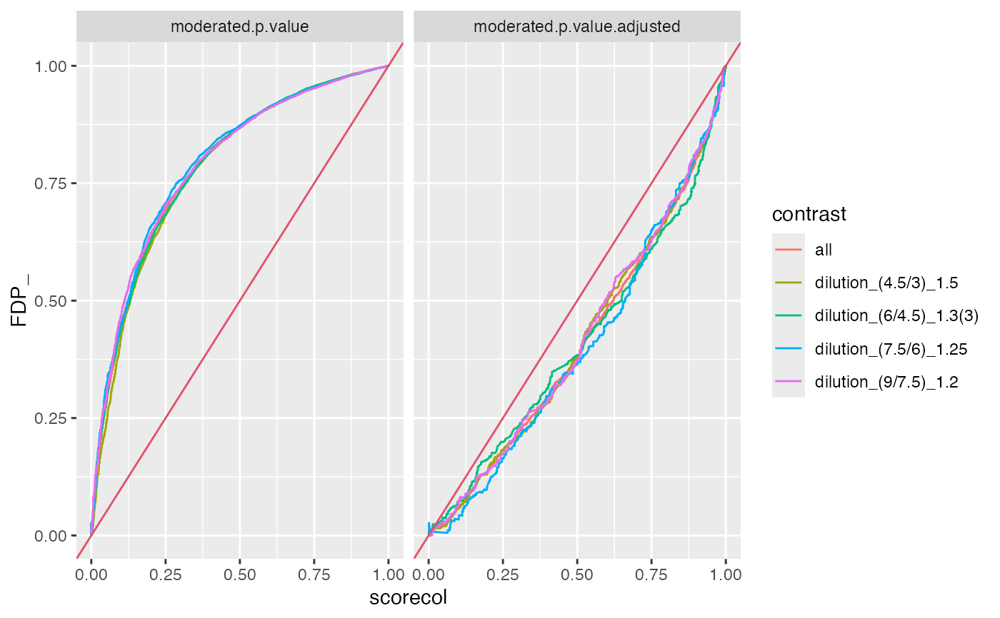

Benchmark R6 class
Benchmark R6 class
Other benchmarking:
INTERNAL_FUNCTIONS_BY_FAMILY,
ionstar_bench_preprocess(),
make_benchmark(),
ms_bench_add_scores(),
ms_bench_auc()
.datadata.frame
is_completetodo
contrastcolumn name
toscalewhich columns to scale
avgIntaverage Intensity
fcestimateestimate column
benchmarktodo
model_descriptiondescribe model
model_namemodel description
hierarchytodo
smcsummarize missing contrasts
summarizeNAstatistic to use for missigness summarization (e.g. statistic, or p-value)
confusiontodo
speciestodo
FDRvsFDPtodo
new()create Benchmark
Benchmark$new(
data,
toscale = c("p.value"),
fcestimate = "diff",
avgInt = "avgInt",
benchmark = list(list(score = "diff", desc = TRUE), list(score = "statistic", desc =
TRUE), list(score = "scaled.p.value", desc = TRUE)),
FDRvsFDP = list(list(score = "FDR", desc = FALSE)),
model_description = "protein level measurments, linear model",
model_name = "medpolish_lm",
contrast = "contrast",
species = "species",
hierarchy = c("protein_Id"),
summarizeNA = "statistic"
)datadata.frame
toscalecolumns ot scale
fcestimatecolumn with fold change estimates
avgIntaverage protein/peptide/metabolite intensity
benchmarkcolumns to benchmark
FDRvsFDPscore for which to generate FDR vs FDP
model_descriptiondescribe model
model_namemodel name
contrastcontrast
speciesspecies (todo rename)
hierarchye.g. protein_Id
summarizeNAexamine this column to determine the proportion of missing values default statistic
columnsto create FPR vs FDP analysis for
complete()set or get complete. If true only proteins for which all contrasts are determinable are examined.
dd <- dplyr::filter(prolfqua_data('data_benchmarkExample'), !is.na(statistic))
dd <- dd |> dplyr::mutate(avgInt = (c1 + c2)/2)
ttd <- ionstar_bench_preprocess(dd)
medpol_benchmark <- make_benchmark(ttd$data,
benchmark = list(
list(score = "estimate", desc = TRUE),
list(score = "statistic", desc = TRUE),
list(score = "scaled.p.value", desc = TRUE)
),
fcestimate = "estimate",
model_description = "med. polish and lm. density",
model_name = "prot_med_lm"
)
#> p.value
medpol_benchmark$plot_score_distribution(list(list(score = "estimate", xlim = c(-1,2) ),
list(score = "statistic", xlim = c(-3,10) )))
#> Picking joint bandwidth of 0.023
#> Warning: Removed 20 rows containing non-finite outside the scale range
#> (`stat_density_ridges()`).
#> Picking joint bandwidth of 0.023
#> Warning: Removed 20 rows containing non-finite outside the scale range
#> (`stat_density_ridges()`).
#> Picking joint bandwidth of 0.37
#> Warning: Removed 172 rows containing non-finite outside the scale range
#> (`stat_density_ridges()`).

medpol_benchmark$get_confusion_benchmark()
#> # A tibble: 97,398 × 19
#> protein_Id scorecol TP what F_ T_ R FDP TP_hits FN_hits
#> <chr> <dbl> <lgl> <chr> <int> <int> <int> <dbl> <int> <int>
#> 1 sp|P0AB61|YCIN_… 2.94 TRUE esti… 13840 2393 1 0 1 2392
#> 2 sp|P13024|FDHE_… 2.30 TRUE esti… 13840 2393 2 0 2 2391
#> 3 sp|P0ADG4|SUHB_… 2.10 TRUE esti… 13840 2393 3 0 3 2390
#> 4 sp|Q15714|T22D1… 1.87 FALSE esti… 13840 2393 4 0.25 3 2390
#> 5 sp|P16456|SELD_… 1.70 TRUE esti… 13840 2393 5 0.2 4 2389
#> 6 sp|Q9UBP9|GULP1… 1.63 FALSE esti… 13840 2393 6 0.333 4 2389
#> 7 sp|P76116|YNCE_… 1.60 TRUE esti… 13840 2393 7 0.286 5 2388
#> 8 sp|P42641|OBG_E… 1.51 TRUE esti… 13840 2393 8 0.25 6 2387
#> 9 sp|P32157|YIIM_… 1.50 TRUE esti… 13840 2393 9 0.222 7 2386
#> 10 sp|O94763|RMP_H… 1.45 FALSE esti… 13840 2393 10 0.3 7 2386
#> # ℹ 97,388 more rows
#> # ℹ 9 more variables: FP_hits <int>, TN_hits <int>, PREC <dbl>, FPR <dbl>,
#> # TPR <dbl>, ACC <dbl>, FDP_ <dbl>, model_name <chr>, contrast <chr>
#Benchmark$debug("plot_score_distribution")
benchmark <- make_benchmark(
ttd$data,
toscale = c("moderated.p.value", "moderated.p.value.adjusted"),
fcestimate = "estimate",
benchmark = list(list(score = "estimate", desc = TRUE),
list(score = "statistic", desc = TRUE),
list(score = "scaled.moderated.p.value", desc = TRUE),
list(score = "scaled.moderated.p.value.adjusted", desc = TRUE)
),
FDRvsFDP =
list(list(score = "moderated.p.value", desc = FALSE),
list(score = "moderated.p.value.adjusted", desc = FALSE)),
model_description = "protein level measurments, lm model",
model_name = "prot_lm"
)
#> moderated.p.value
#> moderated.p.value.adjusted
bb <- benchmark$pAUC_summaries()
benchmark$complete(FALSE)
benchmark$smc$summary
#> # A tibble: 4 × 2
#> nr_missing protein_Id
#> <int> <int>
#> 1 0 4024
#> 2 1 8
#> 3 2 51
#> 4 3 11
benchmark$plot_score_distribution(list(list(score = "estimate", xlim = c(-1,2) ),list(score = "statistic", xlim = c(-3,10) )))
#> Picking joint bandwidth of 0.023
#> Warning: Removed 20 rows containing non-finite outside the scale range
#> (`stat_density_ridges()`).
#> Picking joint bandwidth of 0.023
#> Warning: Removed 20 rows containing non-finite outside the scale range
#> (`stat_density_ridges()`).
#> Picking joint bandwidth of 0.37
#> Warning: Removed 172 rows containing non-finite outside the scale range
#> (`stat_density_ridges()`).

benchmark$plot_score_distribution()
#> Picking joint bandwidth of 0.0231
#> Picking joint bandwidth of 0.0231
#> Picking joint bandwidth of 0.416
#> Picking joint bandwidth of 0.0575
#> Picking joint bandwidth of 0.0426

bb <- benchmark$get_confusion_FDRvsFDP()
xb <- dplyr::filter(bb, contrast == "dilution_(4.5/3)_1.5")
bb <- benchmark$get_confusion_benchmark()
benchmark$plot_ROC(xlim = 0.1)
#> Warning: Removed 12784 rows containing missing values or values outside the scale range
#> (`geom_path()`).
benchmark$plot_precision_recall()
#> Warning: Removed 13479 rows containing missing values or values outside the scale range
#> (`geom_path()`).

benchmark$plot_FDRvsFDP()

benchmark$plot_scatter(list(list(score = "estimate", ylim = c(-1,2) ),list(score = "statistic", ylim = c(-3,10) )))
#> Warning: Removed 20 rows containing missing values or values outside the scale range
#> (`geom_point()`).
#> Warning: Removed 20 rows containing missing values or values outside the scale range
#> (`geom_point()`).
#> Warning: Removed 172 rows containing missing values or values outside the scale range
#> (`geom_point()`).
benchmark$complete(FALSE)
benchmark$missing_contrasts()
#> $summary
#> # A tibble: 4 × 2
#> nr_missing protein_Id
#> <int> <int>
#> 1 0 4024
#> 2 1 8
#> 3 2 51
#> 4 3 11
#>
#> $nr_na
#> # A tibble: 4,094 × 3
#> protein_Id n nr_na
#> <chr> <int> <int>
#> 1 sp|A0A0U1RRL7|MMPOS_HUMAN~123~A0A0U1RRL7 4 2
#> 2 sp|A0AVT1|UBA6_HUMAN~124~A0AVT1 4 0
#> 3 sp|A0FGR8|ESYT2_HUMAN~125~A0FGR8 4 0
#> 4 sp|A0MZ66|SHOT1_HUMAN~126~A0MZ66 4 0
#> 5 sp|A1L0T0|ILVBL_HUMAN~127~A1L0T0 4 0
#> 6 sp|A1X283|SPD2B_HUMAN~128~A1X283 4 0
#> 7 sp|A2RRP1|NBAS_HUMAN~129~A2RRP1 4 0
#> 8 sp|A3KN83|SBNO1_HUMAN~130~A3KN83 4 0
#> 9 sp|A4D1E9|GTPBA_HUMAN~131~A4D1E9 4 0
#> 10 sp|A5PLL7|TM189_HUMAN~132~A5PLL7 4 0
#> # ℹ 4,084 more rows
#>
stopifnot(nrow(benchmark$pAUC_summaries()$ftable$content) == 4 * (4 + 1))
benchmark$complete(TRUE)
stopifnot(nrow(benchmark$pAUC_summaries()$ftable$content) == 4 * (4+1))
missum <- benchmark$missing_contrasts()$summary
stopifnot(nrow(missum) == 4)
stopifnot(ncol(missum) == 2)
# returns number of statistics
stopifnot(nrow(benchmark$n_confusion_benchmark()) == 4 * (4 + 1))
stopifnot(nrow(benchmark$n_confusion_FDRvsFDP()) == 2 * (4 + 1))
benchmark$pAUC()
#> # A tibble: 20 × 6
#> # Groups: contrast [5]
#> contrast what AUC pAUC_10 pAUC_20 Name
#> <chr> <chr> <dbl> <dbl> <dbl> <chr>
#> 1 all estimate 94.3 72.8 83.1 prot…
#> 2 all scaled.moderated.p.value 94.6 77.9 83.8 prot…
#> 3 all scaled.moderated.p.value… 94.6 77.7 83.6 prot…
#> 4 all statistic 94.4 76.6 82.7 prot…
#> 5 dilution_(4.5/3)_1.5 estimate 94.6 84.4 88.7 prot…
#> 6 dilution_(4.5/3)_1.5 scaled.moderated.p.value 94.8 85.4 88.2 prot…
#> 7 dilution_(4.5/3)_1.5 scaled.moderated.p.value… 94.8 85.4 88.2 prot…
#> 8 dilution_(4.5/3)_1.5 statistic 94.7 84.6 87.7 prot…
#> 9 dilution_(6/4.5)_1.3(3) estimate 93.7 74.8 83.9 prot…
#> 10 dilution_(6/4.5)_1.3(3) scaled.moderated.p.value 94.2 78.7 84.1 prot…
#> 11 dilution_(6/4.5)_1.3(3) scaled.moderated.p.value… 94.2 78.7 84.1 prot…
#> 12 dilution_(6/4.5)_1.3(3) statistic 94.0 77.6 83.3 prot…
#> 13 dilution_(7.5/6)_1.25 estimate 93.6 64.4 78.6 prot…
#> 14 dilution_(7.5/6)_1.25 scaled.moderated.p.value 93.9 72.4 79.9 prot…
#> 15 dilution_(7.5/6)_1.25 scaled.moderated.p.value… 94.0 72.5 80.0 prot…
#> 16 dilution_(7.5/6)_1.25 statistic 93.6 70.4 78.4 prot…
#> 17 dilution_(9/7.5)_1.2 estimate 95.1 66.5 81.1 prot…
#> 18 dilution_(9/7.5)_1.2 scaled.moderated.p.value 95.5 75.0 83.1 prot…
#> 19 dilution_(9/7.5)_1.2 scaled.moderated.p.value… 95.5 75.1 83.2 prot…
#> 20 dilution_(9/7.5)_1.2 statistic 95.2 73.3 81.8 prot…